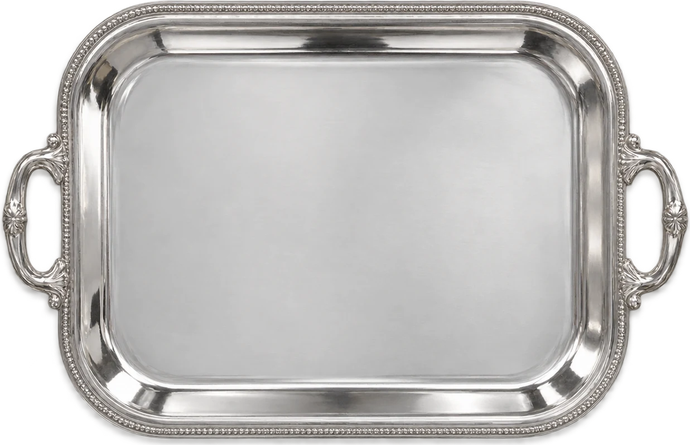

나만의 트레이 꾸미기Artboard 01 · Your everyday still life
Silver Tray Studio ✳︎
a little still life ✳︎

a collection of little things, made by you ♡

Silver Tray Studio는 은빛 트레이 위에 작은 소품을 올려 나만의 정물 사진을 만드는 꾸미기 도구예요. 정답도 점수도 없고, 마음에 드는 장면이 나올 때까지 올리고 빼며 놀면 돼요.
예쁘게 배치하고 예쁜 사진을 찍는 일은 언제나 기분이 좋아요. 그런데 집에 소품을 다 갖춰 놓고 사진을 찍으려면 힘들잖아요. 그래서 화면 위에서 마음껏 올려 보고 사진까지 만들 수 있게 했어요.
"나만의 사진 / 소품 넣기"로 내 사진을 소품처럼 올릴 수 있어요. 사진은 내 기기 안에서 작게 줄여서 쓰고, 서버로 보내지 않아요. 그래서 링크로 공유하면 내가 올린 사진은 빠지고, 기본 소품과 배치만 전달돼요. 사진까지 보여 주고 싶다면 이미지로 저장해서 보내 주세요.
하루를 꾸며 보내는 다른 놀이도 있어요. 한밤의 빵집에서는 친구에게 케이크를 만들어 보낼 수 있어요.